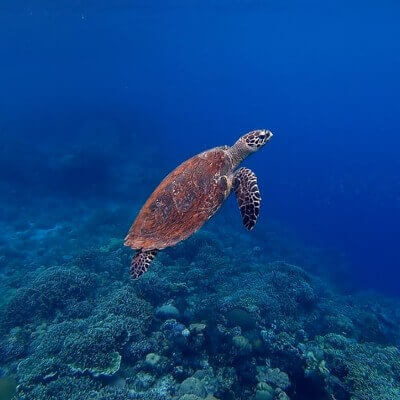
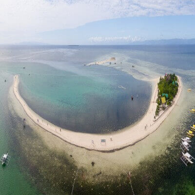
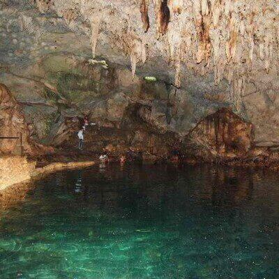
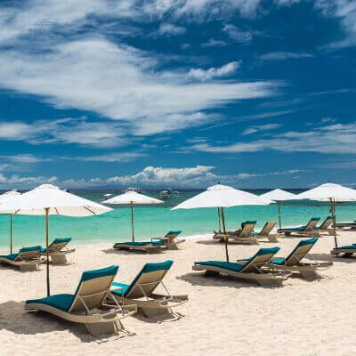

Panglao Island is one of the many islands in the Philippines. It is located in the south central
region
of the country. Panglao attracts tourists from all over the world because of its pristine white-sand
beaches, rich marine life and beautiful nature. It also attracts business-minded people of different
nationalities. Among the many businesses in Panglao are resorts which include five-star hotels,
restaurants offering different kinds of cuisines and dive shops.
For tourists, Panglao offers a lot of activities from diving, snorkeling or just sight-seeing.
Whatever things you want to experience, Panglao has it all.

SNORKELING IN BALICASAG ISLAND
Balicasag island is a fish sanctuary located just 40 minutes away from Panglao island. It is
a great place for snorkeling because of its amazing marine life. You can even feed the
fishes so they will gather around you. It also has colorful coral reefs, and even huge
turtles. There is also jump-off not far from the snorkeling area for divers. It is a
favorite of divers because of the unique and diverse life you can find under.

SUNBATHING ON VIRGIN ISLAND
Virgin Island is a sandbar located between Alona beach and Balicasag island. There’s nothing
much to do here except explore the whole sandbar. You can lie on the sand and get
sun-tanned, or swim in the surrounding clear water. Much of the sand bar portion of Virgin
Island is submerged during high tide. but you can still wade in the warm clear water. Most
visitors just stop by here from their Balicasag tour for picture-taking since the island
makes a cool photo backdrop.

EXPLORING HINAGDANAN CAVE
If you are a fan of caves, then don’t skip Hinagdanan cave. It is not your ordinary cave
because
inside you will find a pool of clear water where you can swim. There are also a couple of
holes
that
let the sunlight inside, which give the cave some light.

RELAXING AT ALONA BEACH
Alona Beach is a famous beach on Panglao island. It is a 1.5 kilometer white sand bordered by
rock walls on both ends. You can walk the whole stretch of the beach in less than 20
minutes. On your walk, you will pass by different kinds of hotels and restaurants, where you
can stop and have a cool drink while sitting on the white sand enjoying the view of the
ocean. I recommend walking early in the morning to catch the sunrise, and later in the
afternoon to see the clouds turn orange when the sun sets.
+63 123 4468465